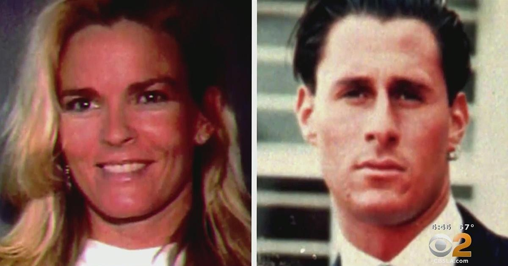

O.J. Simpson's death may improve chances of victims' families collecting huge judgment, experts sayLos Angeles — O.J. Simpson without having paid the lion's share of a California civil jury awarded to the families of his ex-wife Nicole Brown Simpson and her friend Ron Goldman. Acquitted at a criminal trial, Simpson was found liable by jurors in a 1997 wrongful death lawsuit. The public is now likely to get a closer look Simpson's finances, and the families are likely to have a better shot at collecting — if there's anything to collect. David Cook, an attorney who's been seeking to collect the civil judgment for Goldman's family since 2008, said Simpson "died without penance. We don't know what he has, where it is or who is in control. We will pick up where we are and keep going with it." How the next few months may play out Whether or not he left behind a will, and whatever that document says, Simpson's assets will now almost certainly have to go through what's known as the probate process in court before his four children or other intended heirs can collect on any of them. Different states have different probate laws. Generally, the case is filed in the state where the person was living when they died. In Simpson's case, that's Nevada. But if significant assets are in California or Florida, where he also lived at various times, separate cases could emerge there. Nevada law says an estate must go through the courts if its assets exceed $20,000, or if any real estate is involved, and that must be done within 30 days of the death. If a family fails to file documents, creditors themselves can begin the process. Once the case is in court, creditors who say they're owed money can then seek a piece of the assets. The Goldman and Brown families will be on at least equal footing with other creditors, and will probably have an even stronger claim. Under California law, creditors holding a judgment lien like the plaintiffs in the wrongful death case are deemed to have secured debt and have priority over creditors with unsecured debt. And they're in a better position to get paid than they were before the defendant's death. Experts weigh in Arash Sadat, a Los Angeles attorney who specializes in property disputes, says it's "100%" better for the claimant to have the debtor be deceased and their money in probate. He said his firm had a jury trial where its clients got a $9 million jury award that the debtor appealed and delayed endlessly. "He did everything he could to avoid paying this debt," Sadat said. "Three or four years later, he died. And within weeks, the estate cuts a check for $12 million. That's the $9 million plus interest that had accrued over this time." The executor or administrator of the estate has much more of an incentive to dispense with debts than the living person does. "That's why you see things like that happening," Sadat said. But of course that doesn't mean payment will be forthcoming. "I do think it's going to be quite difficult for them to collect," attorney Christopher Melcher said. "We don't know what O.J. has been able to earn over the years." Neither Sadat nor Melcher is involved with the Simpson estate or the court case. Contents of Simpson's estate Simpson said he lived only on his NFL and private pensions. Hundreds of valuable possessions were seized as part of the jury award, and Simpson was forced to auction his Heisman Trophy, fetching $230,000. Goldman's father, Fred Goldman, the lead plaintiff, always said the issue was never the money, it was only about holding Simpson responsible. And he said in a statement Thursday that with Simpson's death, "the hope for true accountability has ended." There are ways that a person can use trusts established during their life and other methods to make sure their chosen heirs get their assets in death. If such a trust is irrevocable, it can be especially strong. But transfers of assets to others that are made to avoid creditors can be deemed fraudulent, and claimants like the Goldman and Brown families can file separate civil lawsuits that bring those assets into dispute. |
 |